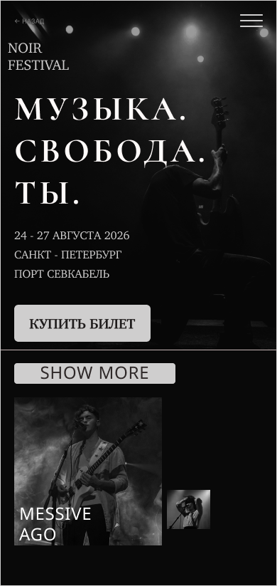

GRUNGE · LANDING PAGE · FIGMA
NOIR FESTIVAL
Концепция лендинга музыкального фестиваля. Работа с атмосферной фотографией, editorial-типографикой и контрастной тёмной визуальной системой. Проект собран в Figma и адаптирован под desktop и mobile.
DESKTOP

MOBILE

О проекте
Визуальный язык построен на сочетании грубой grunge-текстуры, минималистичной композиции и editorial-подачи. Основной акцент — крупная типографика, фотография и спокойная навигация.
СТИЛЬGrunge
Editorial
Editorial
ИНСТРУМЕНТFigma
ШРИФТGeorgia
Arial
Arial
ЦВЕТА